|
|
|
|
Battery Clerk |
|
|
|
Major Appearances:
Game Slave 2
Quote: "Batteries?
50th floor."
Affiliation:
Battery Store
See also: Iggins |
|
While on the search for
batteries for his GS2, Iggins winds up in a massive skyscraper that
sells batteries. The front desk clerk tells Iggins that batteries
are on the 50th floor. She bears a striking resemblance to Tess from
Jhonen's comic Johnny The Homicidal Maniac. |
|
Bill |
|
|
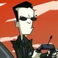 |
Major Appearances:
Career Day -- The Sad, Sad Tale of Chickenfoot
Quote: "Count
Cocofang is a actual vampire, just like Frankenchokey is an
actual... franken... thing."
Affiliation:
Paranormal Investigations
See also: Count
Cocofang |
|
Bill is Dib's partner on
career day. He's a paranormal investigator who believes in things
like C.H.U.M.S, Psychic Lawn Gnomes, Vampire Lemurs, and
Frankenchokey. He doesn't believe in Bigfoot, ghosts, dinosaurs, or
the alien Equinox theory. He wants to prove that Count Cocofang is a
real vampire. |
|
Billy Slunchy |
|
|
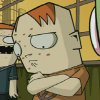 |
Major Appearances:
Parent Teacher Night
Quote: "My mom won't
shut up about me! It's really embarrassing."
Affiliation: Skool
See also: Ted
Slunchy, Mrs. Slunchy, Mongo Slunchy |
|
Billy is the crybaby of the
Slunchy family. He was kicked off of the soccer team for crying too
much. His mother often shows pictures of this, which causes Billy to
cry. He also wet his pants when he overheard Dib screaming about
being fused with Bologna. |
|
Biscuity Goodness |
|
|
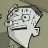 |
Major Appearances:
Lice -- Gaz, Taster of Pork
Quote: "Itching! In
my braaain!"
Affiliation:
Skool- Mr Elliot's class
See also: |
|
See
Mr. Elliots'
seating chart. |
|
Bitey-headed Fly |
|
|
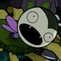 |
Major Appearances:
The Most Horrible X-Mas Ever
Quote: none
Affiliation:
Experiment
See also: |
|
Dib performed an experiment
with Gaz's favorite stuffed doll Bitey the Vampire, placing its head
on a fly's body 3 Christmases prior. The fly still lives in the
neighbor's yard. |
|
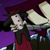 |
|
Bloaty |
|
|
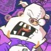 |
Major Appearances:
Bad, Bad Rubber Piggy -- Bloaty's Pizza Hog -- Gaz, Taster of Pork
Cameos: Door to
Door
Quote: "Come to
Bloaty's Pizza Hog! We got games! We got Bloaty! We got Pizza! What
more you askin' for!?!"
Affiliation:
Bloaty's Pizza Hog
See also: The
Animatronic Horrors |
|
The mascot for the
restaurant "Bloaty's Pizza Hog" is a man in a bloated pig suit. The
man inside the costume is even fatter than the pizza hog he dresses
as. He was once a hobo, but he was randomly selected by the Bloaty's
Pizza Hog restaurant to be the Bloaty mascot. He gets all the pizza
he wants, plus a room in the back of the restaurant. |
|
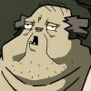 |
|
Blob |
|
|
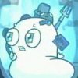 |
Major Appearances:
Abducted
Quote: "Everyone
else they kidnap escapes but I'm so heavy now, so disgusting!"
Affiliation: Space
See also: Abductors |
|
One of the only prisoners
who didn't escape the abductors was a blob creature. It only has
nubs for arms and lacks legs so it can't get anywhere on its own. It
has been 'fused' with many objects, so now it questions its
identity. The blob tells Zim how to escape, expecting Zim to help
it. |
|
Blobby |
|
|
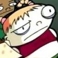 |
Major Appearances:
Gaz, Taster of Pork
Quote: none
Affiliation:
Skool- Mr Elliot's class
See also: |
|
See
Mr. Elliots'
seating chart. |
|
The Blotch |
|
|
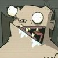 |
Major Appearances:
Mysterious Mysteries
Quote: none
Affiliation: the
paranormal, Mysterious Mysteries
See also: Mysterious
Mysteries Host, Yoa |
|
The Blotch is a fat naked
man who sits on a throne in a small stone room. He speaks only in
gibberish and occasionally screams. Yoa was told by some aliens to
go to the Blotch so she left with some of the other members of the
Children of the Bright and Shinning Saucer to commune with the
Blotch. |
|
Boll |
|
|
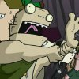 |
Major Appearances:
Attack of the Saucer Morons
Quote: "Bless the
corns on my toes!"
Affiliation:
Children of the Bright and Shinning Saucer
See also: Desmond
Flapp, Trudy, Yoa |
|
This member of the Children
of the Bright and Shinning Saucer wants Zim to bless the corns on
his toes. Boll was one of the saucer morons who went to see the
Blotch. |
|
Brain Parasite |
|
|
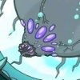 |
Major Appearances:
Backseat Drivers From Beyond the Stars
Quote: none
Affiliation:
Experiment
See also: |
|
Zim's latest attempt to
destroy the humans involved a brain parasite which would suck out
the brains of all humans once let out on the surface. Zim kept it in
a sleeping state in a large tank until it was time to let it out,
though the tank levels needed to be adjusted constantly. It breaks
out and latches onto Zim at the end of the episode. |
|
Brian |
|
|
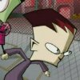 |
Major Appearances:
Quote: "I dunno, Z.
Zim's bein' kinda wacked, yo!"
Affiliation:
Skool- Ms Bitters' class
See also: |
|
See
Ms. Bitters'
seating charts, season 1. |
|
Bus Driver (city) |
|
|
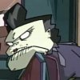 |
Major Appearances:
Walk of Doom
Quote: "This ain't a
free ride little man."
Affiliation: City
See also: |
|
The city bus driver is a
bulky woman with a gap in her teeth. She kicks Zim and GIR off when
they don't have bus fair. Zim and GIR later return with money earned
in the park but don't stay long when the bus gets stuck in traffic. |